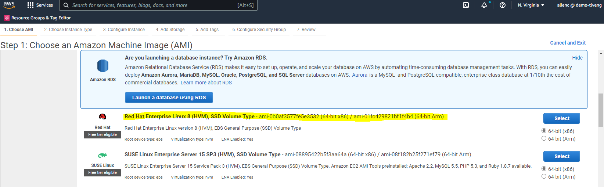
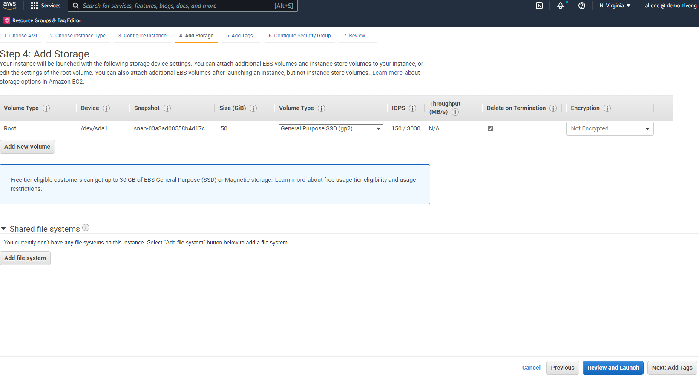
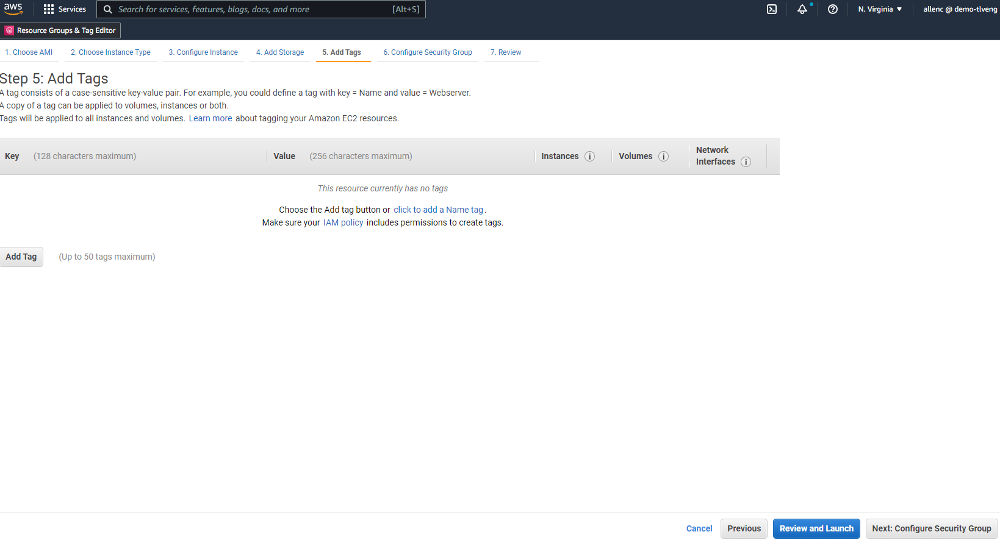
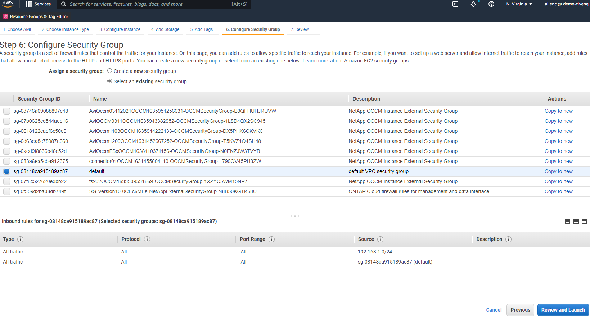
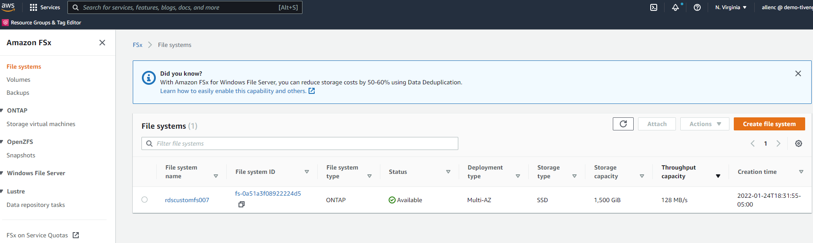
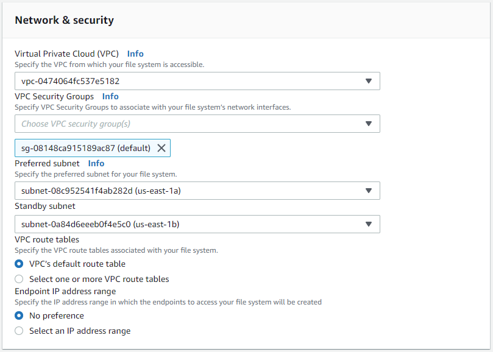
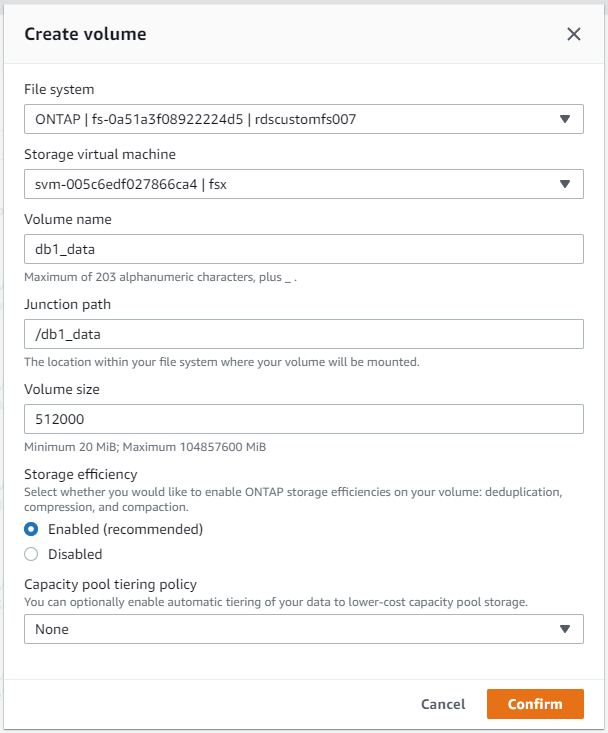
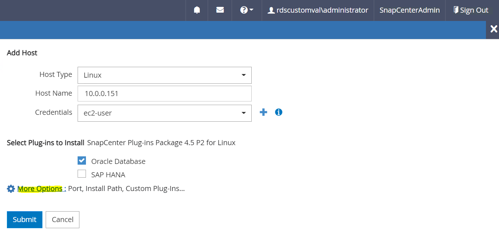
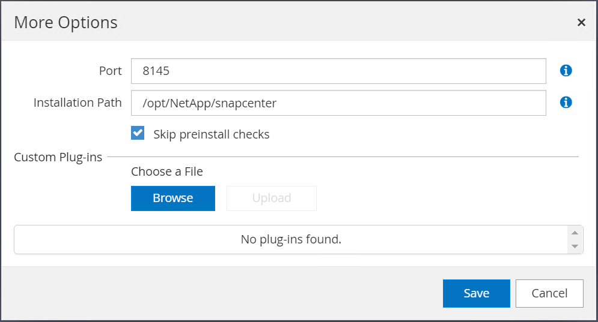

请求文档变更
请求文档变更 在 GitHub 上编辑
在 GitHub 上编辑 提供者指南
提供者指南AWS EC2/FSX上的Oracle分步部署过程
通过EC2控制台部署适用于Oracle的EC2 Linux实例
如果您是AWS的新用户、则首先需要设置AWS环境。AWS网站登录页面上的文档选项卡提供了有关如何部署Linux EC2实例的EC2说明链接、该实例可用于通过AWS EC2控制台托管Oracle数据库。以下部分总结了这些步骤。有关详细信息、请参见链接的AWS EC2专用文档。
设置AWS EC2环境
您必须创建一个AWS帐户来配置必要的资源、以便在EC2和FSX服务上运行Oracle环境。以下AWS文档提供了必要的详细信息：
主要主题：
-
注册AWS。
-
创建密钥对。
-
创建安全组。
在AWS帐户属性中启用多个可用性区域
对于架构图中所示的Oracle高可用性配置、您必须在一个区域中至少启用四个可用性区域。多个可用性区域也可以位于不同区域、以满足灾难恢复所需的距离。

创建并连接到EC2实例以托管Oracle数据库
请参见教程 "开始使用Amazon EC2 Linux实例" 分步部署过程和最佳实践。
主要主题：
-
概述。
-
前提条件。
-
第1步：启动实例。
-
第2步：连接到实例。
-
第3步：清理实例。
以下屏幕截图展示了如何使用EC2控制台部署M5类型的Linux实例以运行Oracle。
-
在EC2信息板中、单击黄色的Launch Instance按钮以启动EC2实例部署工作流。

-
在第1步中、选择"Red Hat Enterprise Linux 8 (HVM)、SSD卷类型- AMI-0b0af3577fe5e3532 (64位x86)/AMI-01fc429821bf1f4b4 (64位ARM)"。

-
在步骤2中、根据Oracle数据库工作负载选择一个M5实例类型、并分配适当的CPU和内存。单击"下一步：配置实例详细信息"。

-
在步骤3中、选择应放置实例的VPC和子网、并启用公有 IP分配。单击"下一步：添加存储"。

-
在步骤4中、为根磁盘分配足够的空间。您可能需要空间来添加交换。默认情况下、EC2实例分配的交换空间为零、这不是运行Oracle的最佳选择。

-
在步骤5中、根据需要添加用于实例标识的标记。

-
在第6步中、选择现有安全组或使用所需的实例入站和出站策略创建一个新安全组。

-
在第7步中、查看实例配置摘要、然后单击启动以启动实例部署。系统将提示您创建密钥对或选择密钥对以访问实例。


-
使用SSH密钥对登录到EC2实例。根据需要更改密钥名称和实例IP地址。
ssh -i ora-db1v2.pem ec2-user@54.80.114.77
您需要在其指定可用性区域中创建两个EC2实例作为主Oracle服务器和备用Oracle服务器、如架构图所示。
为ONTAP 文件系统配置FSX以存储Oracle数据库
EC2实例部署会为操作系统分配EBS根卷。适用于ONTAP 文件系统的FSX可提供Oracle数据库存储卷、包括Oracle二进制卷、数据卷和日志卷。FSX存储NFS卷可以从AWS FSX控制台或Oracle安装进行配置、也可以通过配置自动化在自动化参数文件中按照用户配置的方式分配卷。
为ONTAP 文件系统创建FSX
已参考此文档 "管理适用于ONTAP 文件系统的FSX" 用于为ONTAP 文件系统创建FSX。
主要注意事项：
-
SSD存储容量。最小1024 GiB、最大192 TiB。
-
已配置SSD IOPS。根据工作负载要求、每个文件系统最多可达到80、000 SSD IOPS。
-
吞吐量容量。
-
设置管理员fsxadmin/vsadmin密码。FSX配置自动化所需。
-
备份和维护。禁用自动每日备份；数据库存储备份通过SnapCenter 计划执行。
-
从SVM详细信息页面检索SVM管理IP地址以及特定于协议的访问地址。FSX配置自动化所需。

有关设置主HA FSX集群或备用HA FSX集群的步骤、请参见以下分步过程。
-
在FSX控制台中、单击Create File System以启动FSX配置工作流。

-
选择适用于NetApp ONTAP 的Amazon FSX。然后单击下一步。

-
选择标准创建、然后在文件系统详细信息中将文件系统命名为Multi-AZ HA。根据您的数据库工作负载、选择自动或用户配置的IOPS、最高可达80、000 SSD IOPS。FSX存储在后端提供高达2 TiB的NVMe缓存、可提供更高的测量IOPS。

-
在网络和安全部分中、选择VPC、安全组和子网。应在部署FSX之前创建这些卷。根据FSX集群的角色(主或备用)、将FSX存储节点置于相应的分区中。

-
在安全性和加密部分中、接受默认值、然后输入fsxadmin密码。

-
输入SVM名称和vsadmin密码。

-
将卷配置留空；此时不需要创建卷。

-
查看摘要页面、然后单击创建文件系统以完成FSX文件系统配置。

为Oracle数据库配置数据库卷
请参见 "管理ONTAP 卷的FSX—创建卷" 了解详细信息。
主要注意事项：
-
适当调整数据库卷的大小。
-
为性能配置禁用容量池分层策略。
-
为NFS存储卷启用Oracle DNFS。
-
为iSCSI存储卷设置多路径。
从FSX控制台创建数据库卷
在AWS FSX控制台中、您可以为Oracle数据库文件存储创建三个卷：一个用于Oracle二进制文件、一个用于Oracle数据、一个用于Oracle日志。请确保卷命名与Oracle主机名(在自动化工具包中的hosts文件中定义)匹配、以便正确识别。在此示例中、我们使用db1作为EC2 Oracle主机名、而不是使用典型的基于IP地址的主机名作为EC2实例。



|
FSX控制台当前不支持创建iSCSI LUN。对于适用于Oracle的iSCSI LUN部署、可以通过NetApp自动化工具包中的自动化for ONTAP 来创建卷和LUN。 |
在具有FSX数据库卷的EC2实例上安装和配置Oracle
NetApp自动化团队提供了一个自动化套件、用于根据最佳实践在EC2实例上运行Oracle安装和配置。当前版本的自动化套件支持采用默认RU修补程序19.8的基于NFS的Oracle 19c。如果需要、可以轻松地对该自动化套件进行调整、以支持其他RU修补程序。
准备Ansible控制器以运行自动化
请按照"[Creating and connecting to an EC2 instance for hosting Oracle database]"以配置一个小型EC2 Linux实例以运行Ansible控制器。与使用RedHat相比、使用2vCPU和8G RAM的Amazon Linux T2.large应该足以满足要求。
检索NetApp Oracle部署自动化工具包
以EC2-user身份登录到步骤1中配置的EC2 Ansible控制器实例、然后从EC2-user主目录执行`git clone`命令克隆自动化代码的副本。
git clone https://github.com/NetApp-Automation/na_oracle19c_deploy.gitgit clone https://github.com/NetApp-Automation/na_rds_fsx_oranfs_config.git使用自动化工具包执行自动化Oracle 19c部署
请参见以下详细说明 "CLI 部署 Oracle 19c 数据库" 使用CLI自动化部署Oracle 19c。执行攻略手册时的命令语法略有变化、因为您使用的是SSH密钥对、而不是主机访问身份验证的密码。以下列表概括介绍了相关内容：
-
默认情况下、EC2实例使用SSH密钥对进行访问身份验证。从Ansible控制器自动化根目录`/home/EC2-user/na_oracle19c_deploy`和`/home/EC2-user/na_RDS_FSx_oranfs_config`中、为在步骤中部署的Oracle主机创建SSH密钥`accesstkey.pem`的副本"[Creating and connecting to an EC2 instance for hosting Oracle database]。 "
-
以EC2-user身份登录到EC2实例数据库主机、然后安装python3库。
sudo yum install python3 -
从根磁盘驱动器创建16G交换空间。默认情况下、EC2实例创建的交换空间为零。请按照以下AWS文档操作： "如何使用交换文件分配内存以用作Amazon EC2实例中的交换空间？"。
-
返回到Ansible控制器(
cd /home/EC2-user/na_RDS_FSx_oranfs_config)、并根据相应要求和`linux_config`标记执行克隆前攻略手册。ansible-playbook -i hosts rds_preclone_config.yml -u ec2-user --private-key accesststkey.pem -e @vars/fsx_vars.yml -t requirements_configansible-playbook -i hosts rds_preclone_config.yml -u ec2-user --private-key accesststkey.pem -e @vars/fsx_vars.yml -t linux_config -
切换到`/home/EC2-user/na_oracle19c_deploy-master`目录、阅读README文件、并使用相关全局参数填充全局`vars.yml`文件。
-
使用`host_vars`目录中的相关参数填充`host_name.yml`文件。
-
执行适用于Linux的攻略手册、并在系统提示输入vsadmin密码时按Enter键。
ansible-playbook -i hosts all_playbook.yml -u ec2-user --private-key accesststkey.pem -t linux_config -e @vars/vars.yml -
执行适用于Oracle的攻略手册、并在系统提示您输入vsadmin密码时按Enter键。
ansible-playbook -i hosts all_playbook.yml -u ec2-user --private-key accesststkey.pem -t oracle_config -e @vars/vars.yml
如果需要、将SSH密钥文件上的权限位更改为400。将Oracle主机(host_vars`文件中的`Ansible主机) IP地址更改为EC2实例公有 地址。
在主FSX HA集群和备用FSX HA集群之间设置SnapMirror
为了实现高可用性和灾难恢复、您可以在主FSX存储集群和备用FSX存储集群之间设置SnapMirror复制。与其他云存储服务不同、FSX支持用户按所需频率和复制吞吐量控制和管理存储复制。此外、它还允许用户在不影响可用性的情况下测试HA/DR。
以下步骤显示了如何在主FSX存储集群和备用FSX存储集群之间设置复制。
-
设置主集群对等和备用集群对等。以fsxadmin用户身份登录到主集群、然后执行以下命令。此对等创建过程会在主集群和备用集群上执行create命令。将`standby-cluster_name`替换为适用于您的环境的名称。
cluster peer create -peer-addrs standby_cluster_name,inter_cluster_ip_address -username fsxadmin -initial-allowed-vserver-peers * -
在主集群和备用集群之间设置SVM对等关系。以vsadmin用户身份登录到主集群、然后执行以下命令。将`primary_vserver_name`、
standby-vserver_name、`standby-cluster_name`替换为适用于您环境的名称。vserver peer create -vserver primary_vserver_name -peer-vserver standby_vserver_name -peer-cluster standby_cluster_name -applications snapmirror -
验证集群和SVM对等项是否设置正确。

-
在备用FSX集群上为主FSX集群上的每个源卷创建目标NFS卷。根据您的环境需要替换卷名称。
vol create -volume dr_db1_bin -aggregate aggr1 -size 50G -state online -policy default -type DPvol create -volume dr_db1_data -aggregate aggr1 -size 500G -state online -policy default -type DPvol create -volume dr_db1_log -aggregate aggr1 -size 250G -state online -policy default -type DP -
如果使用iSCSI协议进行数据访问、则还可以为Oracle二进制文件、Oracle数据和Oracle日志创建iSCSI卷和LUN。在卷中为快照留出大约10%的可用空间。
vol create -volume dr_db1_bin -aggregate aggr1 -size 50G -state online -policy default -unix-permissions ---rwxr-xr-x -type RWlun create -path /vol/dr_db1_bin/dr_db1_bin_01 -size 45G -ostype linuxvol create -volume dr_db1_data -aggregate aggr1 -size 500G -state online -policy default -unix-permissions ---rwxr-xr-x -type RWlun create -path /vol/dr_db1_data/dr_db1_data_01 -size 100G -ostype linuxlun create -path /vol/dr_db1_data/dr_db1_data_02 -size 100G -ostype linuxlun create -path /vol/dr_db1_data/dr_db1_data_03 -size 100G -ostype linuxlun create -path /vol/dr_db1_data/dr_db1_data_04 -size 100G -ostype linuxvol create -volume dr_db1_log -aggregate aggr1 -size 250G -state online -policy default -unix-permissions -rwxr-x -type rw
lun create -path /vol/dr_db1_log/dr_db1_log_01 -size 45G -ostype linuxlun create -path /vol/dr_db1_log/dr_db1_log_02 -size 45G -ostype linuxlun create -path /vol/dr_db1_log/dr_db1_log_03 -size 45G -ostype linuxlun create -path /vol/dr_db1_log/dr_db1_log_04 -size 45G -ostype linux -
对于iSCSI LUN、使用二进制LUN作为示例、为每个LUN的Oracle主机启动程序创建映射。将igroup替换为适合您环境的名称、并增加每个附加LUN的lun-id。
lun mapping create -path /vol/dr_db1_bin/dr_db1_bin_01 -igroup ip-10-0-1-136 -lun-id 0lun mapping create -path /vol/dr_db1_data/dr_db1_data_01 -igroup ip-10-0-1-136 -lun-id 1 -
在主数据库卷和备用数据库卷之间创建SnapMirror关系。替换您的环境的相应SVM名称
snapmirror create -source-path svm_FSxOraSource:db1_bin -destination-path svm_FSxOraTarget:dr_db1_bin -vserver svm_FSxOraTarget -throttle unlimited -identity-preserve false -policy MirrorAllSnapshots -type DPsnapmirror create -source-path svm_FSxOraSource:db1_data -destination-path svm_FSxOraTarget:dr_db1_data -vserver svm_FSxOraTarget -throttle unlimited -identity-preserve false -policy MirrorAllSnapshots -type DPsnapmirror create -source-path svm_FSxOraSource:db1_log -destination-path svm_FSxOraTarget:dr_db1_log -vserver svm_FSxOraTarget -throttle unlimited -identity-preserve false -policy MirrorAllSnapshots -type DP
可以使用适用于NFS数据库卷的NetApp自动化工具包自动设置此SnapMirror。该工具包可从NetApp公有 GitHub站点下载。
git clone https://github.com/NetApp-Automation/na_ora_hadr_failover_resync.git在尝试进行设置和故障转移测试之前、请仔细阅读自述文件中的说明。
|
|
将Oracle二进制文件从主集群复制到备用集群可能会涉及Oracle许可证。有关说明、请联系您的Oracle许可证代表。另一种方法是在恢复和故障转移时安装和配置Oracle。 |
SnapCenter 部署
SnapCenter 安装
请遵循 "安装SnapCenter 服务器" 安装SnapCenter 服务器。本文档介绍如何安装独立的SnapCenter 服务器。SaaS版本的SnapCenter 正在进行测试审核、不久将推出。如果需要、请咨询NetApp代表以了解可用性。
为EC2 Oracle主机配置SnapCenter 插件
-
自动安装SnapCenter 后、以安装SnapCenter 服务器的Window主机的管理用户身份登录到SnapCenter。

-
从左侧菜单中、单击设置、然后单击凭据和新建、为SnapCenter 插件安装添加EC2-user凭据。

-
通过编辑EC2实例主机上的`/etc/ssh/sshd_config`文件、重置EC2-user密码并启用密码SSH身份验证。
-
验证是否已选中"Use sudo privileges"复选框。您只需在上一步中重置EC2-user密码即可。

-
将SnapCenter 服务器名称和IP地址添加到EC2实例主机文件以进行名称解析。
[ec2-user@ip-10-0-0-151 ~]$ sudo vi /etc/hosts [ec2-user@ip-10-0-0-151 ~]$ cat /etc/hosts 127.0.0.1 localhost localhost.localdomain localhost4 localhost4.localdomain4 ::1 localhost localhost.localdomain localhost6 localhost6.localdomain6 10.0.1.233 rdscustomvalsc.rdscustomval.com rdscustomvalsc
-
在SnapCenter 服务器Windows主机上、将EC2实例主机IP地址添加到Windows主机文件`C：\Windows\System32\drivers\etc\hosts`。
10.0.0.151 ip-10-0-0-151.ec2.internal
-
在左侧菜单中、选择主机>受管主机、然后单击添加将EC2实例主机添加到SnapCenter。

检查Oracle数据库、然后在提交之前、单击更多选项。

选中跳过预安装检查。确认跳过预安装检查、然后在保存后单击提交。

系统将提示您确认指纹、然后单击确认并提交。

成功配置插件后、受管主机的整体状态将显示为正在运行。

配置Oracle数据库的备份策略
请参见本节 "在 SnapCenter 中设置数据库备份策略" 有关配置Oracle数据库备份策略的详细信息。
通常、您需要为完整快照Oracle数据库备份创建一个策略、并为Oracle归档日志唯一快照备份创建一个策略。
|
|
您可以在备份策略中启用Oracle归档日志修剪、以控制日志归档空间。如果需要复制到HA或DR的备用位置、请选中"选择二级复制选项"中的"创建本地Snapshot副本后更新SnapMirror"。 |
配置Oracle数据库备份和计划
SnapCenter 中的数据库备份可由用户配置、可以单独设置、也可以作为资源组中的组进行设置。备份间隔取决于RTO和RPO目标。NetApp建议您每隔几小时运行一次完整的数据库备份、并以10到15分钟等较高的频率对日志备份进行归档、以实现快速恢复。
请参阅的Oracle部分 "实施备份策略以保护数据库" 有关实施一节中创建的备份策略的详细分步过程 [Configure backup policy for Oracle database] 和用于备份作业计划。
下图举例说明了为备份Oracle数据库而设置的资源组。